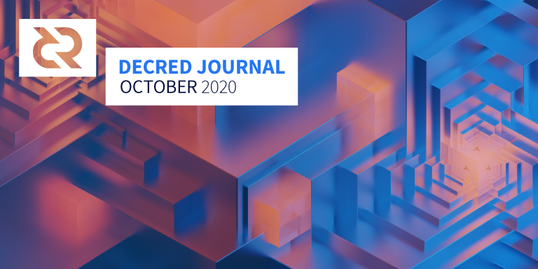

Decred月报 – 2020年10月

图片: @saender
十月重点:
- v1.6.0的前两个候选版本(rc1,rc2)，在经过社区测试,修复和改进之后，即将发布第三个候选版本。
- dcrdex 初始发行版在主网上与第一个v1.6.0候选版本一起发布。CLI用户现在可以在install命令中添加额外的参数到dcrdex中。
- 现在，许多社区成员的注意力都转向到v1.6，请查看“外展”部分以了解他们的计划。
- 庆祝Politeia工作2周年，祝贺47个已批准提案的发布者以及投票支持这些提案的利益相关者。
DCRDEX初始发行版
自DCRDEX的RFP和开发提案在Politeia上获得批准以来，已经有一年多的时间了，Decred用户现在可以在DCR和BTC之间进行交易，从而免受资金和个人信息泄露风险。
首先发布了初始版本 ，然后最新的v0.1.1补丁程序也随即发布。
请访问dex.decred.org查看详情，按照@richardred的指南进行操作，或在视频中查看它的使用情况。你也可以在dcrdata的“市场”图表上查看最新的价格和订单以及其它更多的公共数据。
我要感谢所有我们早期的测试人员的帮助,反馈和耐心。我们考虑了很多反馈，并解决了许多UI / UX问题，同时修复了在操作时弹出的几个错误。 (@chappjc)
祝贺DCRDEX的发布！
v1.6候选版本
dcrd，dcrwallet，Decrediton和dcrlnd的候选版本可在此处进行下载测试。请注意，虽然Decrediton中有新的重要功能也可以使用，但第三个候选版本中将提供许多UI改进和bug修复。
总之，请记住访问这个说明文档运行它们。
Decred版本v1.6将是迄今为止最重要的更新，如果你想协助推广，请点击这里查看。
开发进展总结
除非另有说明，否则此处报告的工作仅限为“合并到主核心存储库”状态。这意味着这项工作已经完成、审查并集成到高级用户可以构建和运行的源代码中，但对于普通用户来说，还不能使用。
v1.6候选版本1和2已进行公开测试。您可以阅读RC2发行说明并在此处获取源代码。欢迎在这里提交bug。
v1.6版本中包含的工作：
- 更改了挖矿代码，优化交易费用
- 选票池优化，细节请查看这里
- 为被否定的区块优化了区块模板生成规则
- 对新的国库代码进行了多次调整和修复
- 重写生成证书以支持更多实例工具（例如不包括证书中的主机名和接口或指定4种受支持的算法中的任何一种）
- 改进区块链生成测试工具
- 修复数据库迁移以支持从v1.4升级
- 对数据库优化以解决新版本数据库和软件的兼容性，从头开始重新下载区块链是自动的，不需要用户任何手动干预
v1.6的后续工作:
- 继续开发以覆盖测试rpcserver
- 对
mining程序包进行了整理，以方便新用户导航和测试
- 允许单独加密和解锁钱包帐户，使每个钱包都有自己的密码
- 添加用于查询和设置国库的投票策略命令
- 用于为单个tspend交易设置投票策略的命令
- 要求gRPC客户端进行TLS证书认证，并允许JSON-RPC客户端认证。这是与dcrwallet进行通信的一种更安全的方式。更新了其它项目以支持此更改（Decrediton，Politia，dcrlnd等）。
- 允许gRPC客户端一次锁定/解锁钱包，在没有密码的情况下调用
- 购买选票时更好地处理低 余额问题
- 跟踪vspd选票费用的状态以解决vspd费用处理失败
- vspd多项修复
- 修复
getminingstate和getinitstate消息
- 添加闪电网络守望塔支持
- 闪电网络界面的多个UI/UX改进
- 添加新的vspd自动购票
- 添加新的vspd手动购票
- 隐私购票的初步整合
- vspd选票清单
- 弃用trezor.js迁移到Trezor连接API
- 在边栏上显示SPV模式图标
- 在侧边栏上显示节点数
- 选票状态的新标签
- 自动记忆上次使用的VSP
- 在种子输入界面上突出显示输入错误
- 更新葡萄牙语翻译
- 继续重构功能组件和CSS模块
- 约60个bug修复
正在进行中：
- 内嵌评论图片
- 针对Politeia和CMS的bug修复和UI调整
正在进行中：
更新tlog后端：
我们已经建立了一个测试网实例，并且仍在测试所有内容并修复bug。包容性证明路线和测试覆盖范围也在研究中。（@lukebp）
- 优化和bug修复
- 支持DCP-6国库升级
- 向池子支付的粉尘将被没收。这样做的原因之一是粉尘支付无论如何都会使其它支付交易失败。另一个是激励它为矿池贡献足够的资源，以便在开采一个街区时获得正常的支出，并阻止进行间歇性的零星工作。
- 为了支持Postgres作为数据库后端，进行了大量工作
- 在管理页面上显示待处理和已完成的池费用
- 重构奖励支付代码
- 改进测试代码
-
过移植数百个上游提交，将其更新为lnd v0.11.1代码。要了解移植工作的规模，您可以查看这里了解更多。
-
更新到最新的dcrd和dcrwallet
dcrlnd正在准备将v0.3.0与核心软件（dcrd，dcrwallet，Decrediton）的大型v1.6版本一起发布。发行说明在这里。
十月份的大部分工作都包含在最初的v0.1.0和后续的v0.1.1版本中。
- 提供可选择的隔离见证BTC交易合约（节省约30％的交易费）
- 为兑换交易添加了可配置的确认目标数量（不必像swap tx一样，因此可以节省费用）
- 生成新的存款地址
- 客户端Tor支持
- 多个通知保持可见状态约4秒钟，以及其它一系列通知UI改进
- 添加市场暂停/恢复功能
- 启动时解析匹配状态
- 更改违规和处罚系统
- 对用户下达的订单数量实施限制
- 验证交易未完成订单的资金是否未用
- 允许断开连接的客户端超时以重新连接，然后取消其订单（取消）
- 客户端登录之前的数据传输限制
- 更新自述文件中的主网说明
- 大量bug修复
对来自7个贡献者的48个PR进行了合并，添加了11000行代码，删除了5000行代码。
正在进行中：
- 修复了余额未更新的错误
进行中：
- CSPP 隐私支持
- 修复了切换货币时精准度损失的错误
- 升级到最新的dcrlibwallet并进行重构
进行中：
- 新UI实施
- 添加了有关可复制构建的页面
其它:
- @degeri在Bug赏金计划上发布了新内容
- dcr开发者文档现在IPFS和ZeroNet上备份，以防万一
人员
欢迎新到来的首次贡献者，他们的代码已合并到主代码库中： @nitronick600 (dcrdocs) and @GuzmanPintos (dcrdocs)!
对Decred社区成员进行4次新采访，内容请参阅媒体部分。
截至11月1日的社区统计信息：
- Twitter粉丝: 40,818 (+28)
- Reddit订阅: 9,937 (+8)
- Matrix #general 用户: 222 (+25)
- Discord 用户: 1,432 (+36)
- Telegram 用户: 2,394 (-40)
- YouTube 订阅: 4,210 (+0), 观看: 159K (+3K)
- LinkedIn 粉丝: 924 (+33)
- GitHub dcrd 星: 566 (+3), fork: 246 (-2)
治理
十月国库收到12388 DCR，花费14748 DCR。按照9月份的每日平均DCR/USD汇率12.01美元计算，这是14.9万美元的收入和17.7万美元的支出。按9月平均汇率13.26美元计算，当月完成工程的美元账单金额为19.6万美元。截至11月4日，社区开发基金余额为638044 DCR（790万美元，12.38美元）。
RFP提案（更改decred.org上的消息传递）的候选提案（在9月获得批准）已投票通过，但没有一个获得批准。结果如下：
- D.R.E.A.M. - 48％批准率，29％投票率
- "Money Evolved" 对网站的更改最少 - 批准率25％，投票率25％
- Decred - 创建革命性的基础设施 - 批准率16％，投票率18％
- "金钱演变" 标题添加 "公平" - 批准率7％，投票率达到了17％
@kozel提出的文本翻译提案已于10月提交，并于11月初获得批准，批准率为75％，投票率为28％。该提案将涉及将Decred出版物和资产翻译成6-8种语言，最高预算为$ 33,000，用于6个月的工作。该提案由记录交付Decred内容的人员组成。
《Politeia Digest》第37期和第38期提供了有关本月提案的更多详细信息。
在Twitter上宣布了来自WhyDecred.com网站的预提案，并在Reddit上进行了讨论，最终于11月初登陆Politeia。
@richardred发表了其运营第二年的Politeia活动报告。一些重点：
- 发表提案46项，批准21项，拒绝17项，放弃6项
- 3个提案未达到法定人数（第一年没有发生）
- 平均（平均）投票率是27.9％，比第一年下降3.3％
- 已通过提案的平均（平均）批准率为79％，低于第一年的86％
- 营销提案比第一年多
- 48％的提案来自承包商（第一年为35％），这些提案仍更有可能获得批准
- 第2年中有10个提案要求延续提案，这些提案的通过率达到80％
- 时薪提案比固定成本更有可能通过
网络
全网算力: 10月哈希率 以450 Ph/s开启并以 225 Ph/s结束。月内，最低为338 Ph/s，峰值为609 Ph/s。哈希率分布 截至10月1日：Poolin 37%, UUPool 37%, Antpool 13%, Huobipool 9%, F2Pool 1.2%, BTC.com 1%, easy2mine 0.9%, Luxor 0.6%, CoinMine 0.02%。
10月25日，哈希率下降到260，并在10月28日一直下降到185 Ph /s。11月的第一天开始快速恢复。
Staking: 30天平均票价为 151.7 DCR (+3.1). 票价139.2-168.3 DCR之间变化。锁定金额为602-612万DCR，相当于参与PoS的可用供应量的49.58-50.87％。
选票价格达到168.28 DCR，这是自2017年更改价格算法以来的新高。
节点: 整个十月份，每个dcr.farm平均有104个公共侦听节点和150个节点。10月的平均版本分布：dcrd v1.5.2、23％dcrd v1.5.1、8％dcrd v1.6开发版本，6％dcrd v1.5.0、3％dcrd v1.5开发和RC版本，2.7％dcrd v1.7开发人员版本，0.7％dcrd v1.4、12％dcrwallet v1.5.1、1.4％dcrwallet v1.5、0.8％dcrwallet v1.4，其它12％。
@PermabullNino将他最近的链上观察（挖矿，选票，国库）贡献给了我们的网络第41期。
整合
stakey.net 是运行新的vspd软件的第一个mainnet VSP。截至11月11日，它已投票13张，40张选票进入选票池。
我们使用VSP进行的首次私人选票购买刚刚在链上得到验证。它是通过CoinShuffle++ 以及Tor onion服务混合使用无帐户购买的。（Twitter上的@stakeynet）
警告：Decred Journal的作者不了解上述任何服务的可信赖性。在将您的个人信息或资产信任给任何实体之前，请先进行自己的研究。
外展活动
@Checkmate呼吁所有Decred利益相关者为发布Decred v1.6做准备。10月16日和10月23日星期五进行的前瞻性思考中的讨论，以及另一个组织起来的帖子，收集了数十个想法，可以做些什么来使人们了解Decred v1.6和DCRDEX。一切Decred倡导者可能需要被组织在这里（一切帮助都是值得鼓励的）
Decred拉美发表了他们第二个提案的第四次报告，其中列出了所有值得注意的事件，媒体形象，业务发展和财务状况。正在探索的一个值得注意的策略是开发人员的外展和西班牙语入门：
- 自7月以来发布了4集CódigoDecred：Git和GitHub简介，使用Python探索Decred ，验证Decred二进制文件和DCRDCR钱包
- 区块链和dcrdata研讨会简介于10月举行
- 截至撰写时，新的@decredES_devs电报频道已有70多个用户
Decred 拉美长期运行的区块链学习与开发挑战赛于10月开放注册，并将持续到12月9日。在第一阶段，参与者将参加研讨会，以学习有关比特币和区块链，DAO，治理，dcrdata API等的知识。他们将需要使用Decred公共区块链数据构建原始项目，并以ISC许可证发布它，并在3分钟的视频演示中进行演示。所有通信，指导和支持都将在@decredES_devs电报中进行。3名中奖者将获得$ 1,500，$ 700和$ 300的DCR奖励。到目前为止，来自8个以上的拉美国家/地区的90余人已经注册。
@ michae2xl发布了他10月份针对“巴西营销”提案的活动的报告。
@pavel宣布了一个新的withDecred.org赠品活动。它使用QR码和Twitter的巧妙组合，以最大程度地同时吸引和传播消息。
Paris Smithson为新网站WhyDecred.com提供了草稿版本，供讨论和反馈。这个项目采用全局方法，首先说明我们今天遇到的所有金钱问题，然后说明Decred如何解决这些问题。高质量的艺术品将被用于交流。现在正在讨论为网站建设提供资金的正式建议。
@ buck54321的一个新项目winatoms.com正在测试中。用户可以创建和解决彼此的难题，如果提交的解决方案正确，则可以赢得DCR。当前，它仅适用于testnet DCR，项目状态为“讨论原型”。在Twitter上关注@winatoms以获取更新。
Monde PR十月份的成就：
- 为金融和加密货币出版物（包括DCRDEX公告）创建/编写了2个故事创意
- 回应了4条评论请求
- 获得4次媒体采访
Monde PR保证的新闻报道：
- DCRDEX公告由Geek Insider，The Ledger时事通讯，Crowdfund Insider, Bankless Times, Crypto Comes, Day Crypto Trading, Crypto Option 和 Crypto Potato覆盖，并与3个新闻媒体联合发行，包括CoinMarketCap和 Bitcoin Insider。
- 公告还通过PRweb 发布，并被包括MarketWatch和Benzinga在内的99个新闻媒体所采用。联合列表可以在这里查看。
- Cointelegraph中的一篇文章，着重@richardred在DeFi市场上的评论，并联合了21个新闻媒体，包括Cointelegraph China和Cointelegraph Spain
- 意大利Cointelegraph和TrendOnline上的文章，其中@ jy-p在PayPal提供加密货币支付方面的评论
活动
参加:
- 10月2日 - Hablemos Decred 15 - 互联网。@elian与来自Bitso和Talent Land的来宾Jose Rodriguez讨论了去中心化金融的未来，不可替代的代币以及使用区块链技术的未来投资。(视频)
- 10月2日 - Decentralized Governance Panel - 互联网。@elian在由Crypto Resources Academy，Kleros和Maker DAO组成的小组中代表Decred项目。讨论是关于分散治理和加密货币的相关性和未来的。(视频)
- 10月8日 - Criptolugares Instagram live - 互联网。@elian与Criptolugares的Jose Manuel da Silva进行了交谈，解释了Decred，Politeia的治理模型，以及如何开始对该项目做出贡献。(视频)
- 10月9日 - Hablemos Decred 16 - 互联网。@elian和来宾Anibal Cripto（加密货币顾问）和Ezio Rojas（西班牙Cointelegraph的新闻负责人）介绍了委内瑞拉的加密货币，采用的挑战以及货币的未来。(视频)
- 10月16日 - Hablemos Decred 17 - 墨西哥墨西哥城。该活动是在比特币大使馆的“ 21 Heads Crypto Art Show”的演示。小组讨论的主题是加密货币与不可替代令牌的潜在作用。(视频)
- 10月17日 - Introduction to Blockchain API for Decred (dcrdata) - 互联网。@pablito主持了关于使用Decred区块链数据的研讨会。(视频)
- 10月21日 - CCOSS 2020 - 互联网。CCOSS是为期5天的开源活动。@adcade在演讲“加密货币行业的开源承包商模型”中介绍了Decred。(视频)
- 10月23日 - Hablemos Decred 18 - 互联网。@adcade和@elian探索了有关该项目的所有细节以及今年将发布的内容。(视频)
- 10月29日 - Blockchain and Cryptocurrencies - 互联网。@elian介绍了v1.6中提供的Decred功能。由Territorio比特币组织。(视频)
- 10月29日 - Criptolugares Instagram live - 互联网。在Criptolugares的第二个现场直播中，@ elian探索了Decred的最新更新。此外，在10位参与者中有100美元的DCR赠品。(视频)
- 10月30日 - Hablemos Decred 19 - 互联网。Guest Manuel Flores（比特币蒙特雷社区的创始人）分享了他对墨西哥和拉美的比特币和加密货币的实际使用案例，采用率以及加密货币成为全球经济中心的未来的看法。(视频)
请注意，Cointelegraph经常用西班牙语宣布西班牙发生的Decred事件。
即将来临：
- 12月11日至12日 - 2020年Cripto拉丁音乐节。
Media
Decred 月报, Politeia Digest和Block Commons现在会在Publish0x上同步发出。
精选文章：
- Decred宣布推出DCRDEX-第一个不收取交易费用的交易所试图通过@l1ndseymm(prweb.com)破坏十亿美元的加密货币交易市场
- 我如何学会并喜欢Decred DEX@bochinchero(publish0x.com)
- 如何运行DCRDEX MVP@richardred(publish0x.com)
- Decred的Politeia的第二年，数字和图表来自@richardred(blockcommons.red)
视频:
- DCRDEX直播-@karamble制作的动画(youtube)
- Decred DEX使用记录 GhostWridah (youtube)
- Decred 双周报2020年10月19日 @Exitus (youtube)
- Staked Podcast 0.0.4谈论Politeia (youtube)
- 为什么要运行Decred完整节点？由Decred Society (youtube)
- Staked Podcast对Akin Sawyerr的访谈 (youtube)
- Staked Podcast采访Checkmate（ReadySetCrypto分析师，@ RoughConsensus Podcast的共同主持人） (youtube)
- 什么是Decred？-Ternio的DCR初学者指南 (youtube)
音频:
- Rough Consensus 11. 在这一集中和来自Iterative Capital的Chris Dannen讨论了开源，比特币，Decred，引导加密货币等等。 (libsyn)
- Decred in Depth 32: Pavel-基层营销+扩大Decred社区 (libsyn)
艺术/娱乐：
- @Exitus的星星等待着你的投票 by @Exitus
- @rouse的Hidden Hydra（Decred v1.6）
- Chad 段子 @Checkmate
- Decred标志艺术字 @Exitus
翻译:
- 遇见颠覆者：Decred的Jake Yocom-Piatt如何通过区块链技术重新定义治理 - 西班牙语 @francov_
- 如何使用DCRDEX MVP- @pablito - 西班牙语 by @pablito
- 区块链治理- @francov_用西班牙语撰写的第1部分和第2部分
- 2020年9月的Decred月报被翻译成阿拉伯文（@arij，@ abdulrahman4），中文（@Dominic），西班牙文（@francov_）和越南语（@duyenemdo，欢迎回来！）。谢谢大家传播！
其它非英语内容：
- “ Decred，去中心化信用的旅程”已在一个流行的阿拉伯加密新闻网站[satoshiat.com](https://www.satoshiat.com/2020/09/%D9%85%D8%B4%D8%B1%D9%88%D8%B9-%D8%B9%D9%85%D9%84%D8%A9-decred-%D8%A8%D8%B1%D9%85%D8%B2%D9%87%D8%A7-dcr/上发布。本文内容非常全面，涵盖了从Decred的起源和历史，治理的重要性和混合共识到LN，隐私和DEX等最新发展。
- @rramires撰写了详细的指南，并用葡萄牙语录制了有关如何在Windows上设置dcrdex的视频。
社区讨论
精选的Reddit帖子：
- Skepticism Sunday在10月4日星期日有35条评论
精选的Twitter讨论：
市场
10月DCR美元交易价格在11.17-13.84 / BTC交易价格 0.00085-0.00124之间。每日平均价格为$12.01。
据报道，dcrdex在10月26日的总交易量为4 BTC，在10月28日的总交易量为25 BTC 。
十月底，比特币交易费用飙升，这使得dcrdex交易变得更加昂贵。内存池在11月的第一周被清除，费用恢复了正常。
可以在dcrdata的市场仪表盘上查看dcrdex订单簿。交易量数据将随之而来。
相关外部信息
占位符的Mario Laul确定了有关分散式网络治理的十篇论文。驱动网络的核心原理的这种高级分解为查看Decred提供了另一种方法。
良好的网络治理通过足够灵活的制衡机制来协调所有利益相关者的利益。治理不平衡或无法解决关键利益相关者之间的冲突会导致不稳定，这对于要成为具有大量用户基础的系统重要管理基础结构的网络而言，尤其是个问题。
IOHK已向Project Catalyst分发了价值25万美元的ADA，这将为社区提出的项目提供资金。根据Cointelegraph的说法，“查尔斯·霍斯金森（Charles Hoskinson）大力支持分散式国债，他认为这是当今时代最伟大的创新之一”。
关于比特币和门罗币之间原子交换的论文于9月发表，相应的提案由门罗币的社区众筹系统资助，在短短4天内筹集了2.7K XMR（34万美元）。另一个小组进一步对该协议进行了迭代，以使用比特币中常见的2-of-2多重签名脚本。
总部位于马耳他的OKEx加密货币交易所已暂停所有加密货币的提取，原因是密钥持有人不愿意使用，因为“目前正在与公安部门合作进行调查”。尽管鲸鱼警报和社交媒体盛传将大量资金转移到币安，但暂停仍在一周后进行，但事实证明这是贴错标签的。
美国司法部发布了Cryptocurrency Enforcement Framework，其中概述了加密货币空间及其非法使用，现有法律以及解决这些挑战的当前挑战和策略。与2019年5月起的FinCEN指南类似，该文档与托管服务最相关。
科莫多宣布，他们将在由开发商正式支持的AtomicDEX流动性网络上实施KYC / AML程序，即使交易是非托管的。该公告提到了除了最近的监管行动以外还需要担心的另一件事：“存在与安全性类似的代币的回购和代币交换，这些代币是AtomicDEX操作的基础，包括DEX代币，SuperNET资产和任何收益分享代币。
CFTC指控BitMEX所有者操作未注册的交易平台并违反CFTC法规，包括未能实施AML程序。
FinCEN向一家比特币搅拌机的所有者发出了6000万美元的罚款，该搅拌机于2月被捕。该服务是保管的。
Coinbase发布了其第一份透明度报告，其中细分了2020年上半年收到的执法要求。
PayPal宣布它将允许用户使用其应用程序购买BTC，ETH，BCH和LTC。初始版本不允许存款，取款或向其他PayPal帐户发送加密货币。该公司具有任意冻结帐户和相关诉讼的历史。
达斯汀Dreifuerst的你知不知道播客一个的警告情况，其中机构投资者的涌入会导致与密码是建立在原则的冲突。
Tether在9月份撤销了一位用户的交易，该用户错误地将资金发送到了DeFi平台Swerve的智能合约中。
DeFi协议Harvest.finance被一笔2400万美元的黑客入侵，其借来的一笔小额信贷操纵着Curve的Y池中稳定币的价格。
上个月失踪了，YFI的Andre Cronje部署了一个新的“ Eminence”游戏平台的合同，几个小时之内就存入了1500万美元，然后全部被黑客拿走了。然后，攻击者将800万美元返还给了由Cronje控制的YFI智能合约，并将其分配给了黑客的受害者。
受欢迎的DeFi角色Blue Kirby不再受欢迎，在过山车的3个月内，他们在Twitter上从0增长到20,000个关注者，并获得了Yearn每月收入7,000美元的工作，出售了500 ETH的Kirby NFT，并获得了25个YFI来自安德烈·克罗涅（Andre Cronje）本人。当Kirby鼓励人们加入被黑客入侵的beta Eminence合同时，事情开始出错了，当他们兑现了所有YFI并被召集时，情况变得更糟了，然后出现了一些新的“ Off-Blue”事件柯比（Kirby）正在推广的代币，人们发现这些代币可疑。显然有人威胁要使用Blue Kirby，他们失踪了，删除了帐户并留下了大约100万美元。
Uniswap持有其基于UNI的新治理系统的第一票和第二票，均以97-98％的票数获得通过，但只有3.75％-3.96％的赞成票通过，而最低通过的法定人数为UNI的4％的赞成票令牌。第一个提案旨在降低提交提案的要求，目前，提案人必须拥有或委派所有UNI的至少1％，并通过法定人数要求（从4％降至3％）。前两个提案是由同一行为者提出的，包括《佛法议定书》和《护手》。第二个提议试图将初始空投扩展到与代理合同进行交互的Uniswap用户，接收这些令牌的地址的约20％是Dharma用户。这导致一些参与者制定 提议作为一种接管尝试。
GitHub删除了流行的youtube-dl项目的存储库，该项目允许从YouTube下载视频文件而无需处理其浏览器UI。这提醒了所有未在Git存储库中存储的GitHub数据可能发生的情况，这在设计讨论和决策存储在问题中并将请求拉到Git之外时尤其重要。
三星正在将AML检查集成到他们的手机中，以使每个人都更加安全。
英国政府发布了有关端到端加密的国际声明，该声明由美国，澳大利亚，新西兰，加拿大，印度和日本的代表共同签署（在DoJ网站上反映）。该声明呼吁科技公司为公共安全注入后门。Matrix团队发表了一份回应，解释了为什么损害每个人的安全和隐私以打击少数不良行为者的虐待从根本上存在缺陷，并提出了替代措施。
提交您的故事！
如果您想列出某些内容，请在此处评论。故事可以涉及开发，研究，推广和服务等内容。
关于月报
这是Decred Journal的第31期。有关所有问题，镜像和翻译的索引，请参见此处.
在经过最少的健全性检查之后，来自第三方的大多数信息都会直接从来源中继。Decred Journal的作者无权验证所有声明。请当心诈骗，并自行进行调查。
感谢 (字母排列):
- 写作和编辑: bee, degeri, elian, l1ndseymm, richardred
- 评论和反馈: arij, bochinchero, buck54321, davecgh, lukebp
- 封面图片: saender
中文社区
- 社区网址
- 微博
- 微信公众号
- 中文电报群
- bilibili频道
- QQ群号-258412796